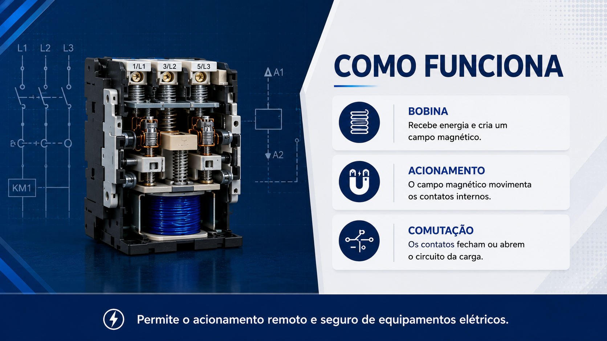
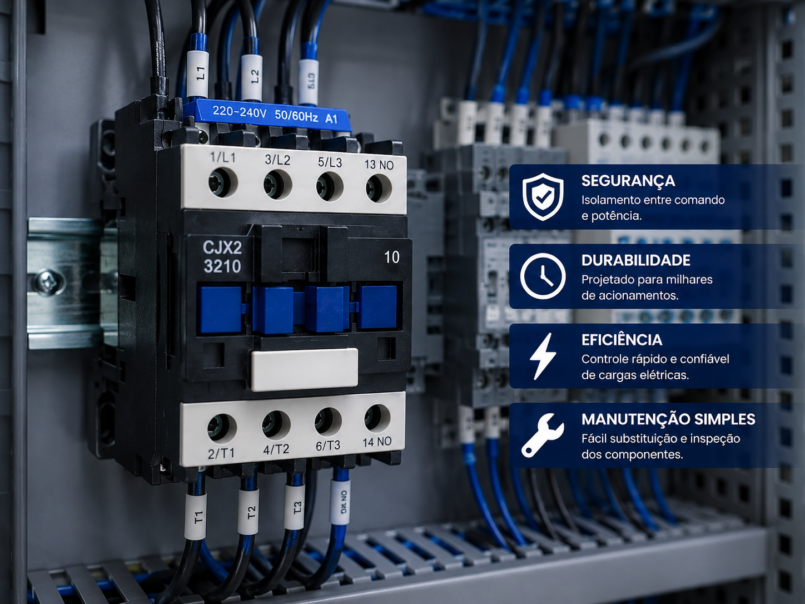
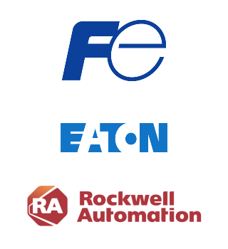

Contator
Dispositivo eletromecânico que funciona como um interruptor de alta potência.



Conceito e Aplicação
O contator é um dispositivo eletromecânico utilizado para realizar o acionamento e desligamento de cargas elétricas de potência por meio de um circuito de comando. É amplamente empregado em sistemas de automação e controle industrial.
- Acionamento de motores elétricos;
- Controle de cargas elétricas;
- Utilizado em painéis elétricos industriais e comerciais;
- Aplicado em bombas, compressores, ventiladores e máquinas industriais.
Informações Complementares

Funcionamento
Aciona e interrompe circuitos elétricos por meio de uma bobina eletromagnética, permitindo controle remoto e seguro.
Saiba Mais
Aplicações
Utilizado no comando de motores, bombas, ventiladores e diversos equipamentos industriais.
Saiba Mais
Vantagens
Maior segurança, longa vida útil e eficiência no acionamento de cargas elétricas.
Saiba MaisEmpresas
As principais empresas que fabricam contatores são referências globais em automação industrial, acionamento de motores e controle de cargas elétricas. Seus produtos são amplamente utilizados em instalações industriais, comerciais e sistemas de infraestrutura, garantindo segurança, eficiência e confiabilidade operacional.
A Eaton, a Fuji Electric e a Rockwell Automation destacam-se no desenvolvimento de soluções para automação e comando elétrico. Seus contatores são reconhecidos pela qualidade construtiva, durabilidade e desempenho em aplicações que exigem acionamentos frequentes e seguros.
EATON: Empresa global especializada em gerenciamento de energia e soluções elétricas. Seus contatores são amplamente utilizados no acionamento de motores, sistemas de automação e controle de cargas elétricas, oferecendo alta confiabilidade e longa vida útil.
FUJI ELECTRIC: Multinacional japonesa com forte atuação nos setores de energia e automação industrial. Seus contatores são reconhecidos pela robustez, eficiência e desempenho em aplicações industriais, contribuindo para operações seguras e contínuas em diversos segmentos.
ROCKWELL AUTOMATION: Referência mundial em automação industrial por meio da marca Allen-Bradley. Seus contatores são desenvolvidos para aplicações de alta performance, proporcionando controle preciso, segurança operacional e integração com sistemas avançados de automação.
